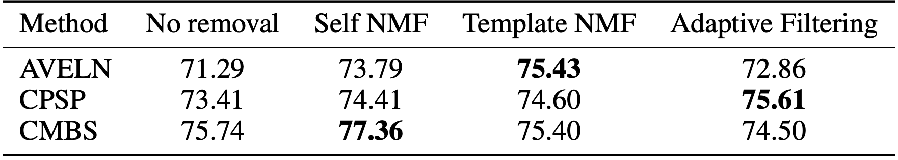

Audio Processing
We adopt three audio processing methods to remove the background music in short videos:
- Self NMF. Extract BGM templates from non-event segments within the same video, then remove BGM via NMF decomposition.
- Template NMF. Utilize clean event templates from BGM-free samples to suppress BGM in contaminated audio via NMF decomposition.
- Adpative LMS Filtering. Apply Least Mean Squares (LMS) adaptive filters derived from template libraries to attenuate BGM components.

An illustration of the spectrum of the audio signal before and after removing the background music.
The results demonstrate varying impacts of BGM removal techniques across different models. First, the effectiveness of preprocessing strategies differs significantly depending on the baseline method. For instance, Template NMF achieves the highest accuracy improvement for AVELN (75.43%, +4.14% over no removal) but slightly degrades CMBS performance (75.40%, -0.34%), while Adaptive Filtering benefits CPSP the most (75.61%, +2.20%) yet underperforms for CMBS (74.50%, -1.24%). Second, among the three preprocessing strategies, Self NMF is the only approach that consistently enhances performance across all models, improving AVELN (73.79%, +2.50%), CPSP (74.41%, +1.00%), and CMBS (77.36%, +1.62%).
BGM Removal Examples
Self NMF
| Original Event | BGM Template | BGM Removed |
Template NMF
| Original Event | Target Event Template | BGM Removed |
Adaptive LMS Filtering
| Original Event | BGM Template | BGM Removed |